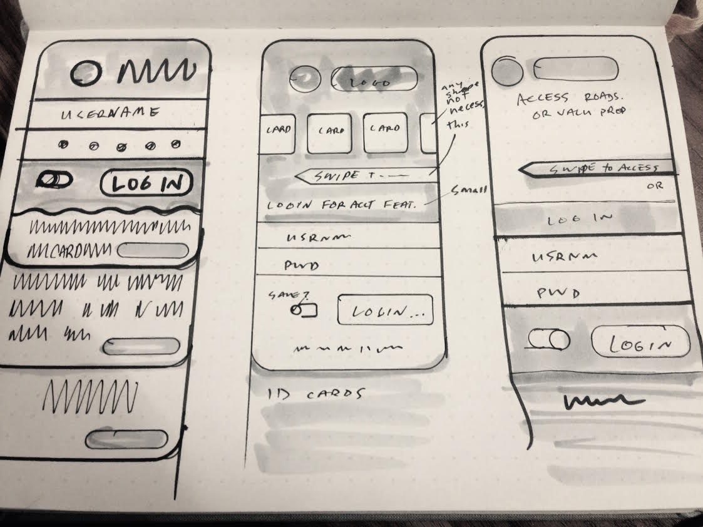

Mobile App Sketching
As a mobile app which offers many free features, we want to surface these features for our customers. We would like people to engage with our brand, build a positive brand image, and be more likely to purchase our premium product.
Problem Definition
This project will be successful if engagement with other areas of the application increase, and people who are not existing customers download the app.
Audience
People who drive and use services like parking reminders, gas locators, and roadside assistance.
Team / Role
I worked with agency interaction designers, product stakeholders, and business/technology stakeholders to assess design feasibility.
Constraints
We were slated to present concepts for alternative home-screen designs to leadership in one day, so our timeline was exceptionally tight.
Design Process
To arrive at these concepts I audited a number of applications, most of which required a log in to access tools or do not have customers log in at all.
The Design Funnel
To better understand my options I listed each requirement on a Post-It and arranged them in various configurations. From there I used an exercise called The Design Funnel and drew about 20 sketches imagining how customers could access the tools without having to log in.

These rough sketches took about 40 minutes and included options like “Siri-integration” and “Today View Widget” integration.
Final Sketches
From the rough sketches I worked with a team of interaction designers to identify the most feasible options and produced low-fidelity sketches to provide the product stakeholder who would then present the concepts to business and technology stakeholders.

The final sketches were the primary interaction patterns presented to business and while they were met with very favorable results, the technology team did not feel they would be able to implement the features within the project timeline.
Retrospective
I feel I produced some good sketches but with a more flexible timeline the options would’ve been very effective at surfacing the features for customers.
If I could work on this problem again and had more time I would consider more playful ways of approaching the interactions to facilitate customer engagement and produce higher-fidelity interaction samples.